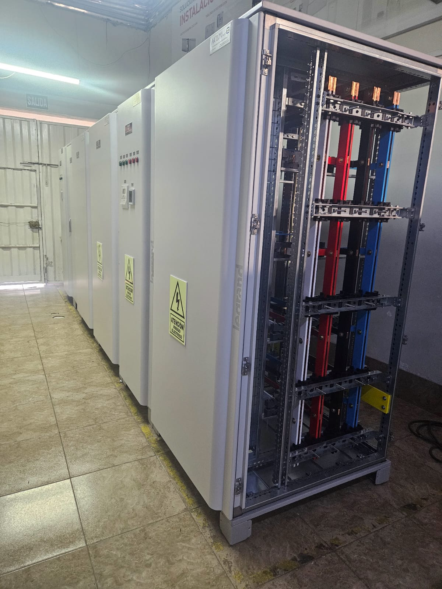

Modelo de Simulación para la Optimización del Ciclo de Compra y Adquisición de Materiales en la Producción de Tableros Eléctricos de ACL BEST COMPANY S.A.C.
Docente
Sebastián Willis Lozada
Integrantes
López Cabrera, Luis Diego
Muñoz Loza, Alissa Kriseyda
Chávez Pinado, Evelyn Rubí
Vergaray Huatay, Jesús Enrique
Castañeda Bashi, Victor Jesús
Lima, Perú — 2026
Datos de la empresa
Ficha de ACL BEST COMPANY S.A.C.
Empresa privada peruana constituida en 2019, del sector metalmecánico y de manufactura eléctrica. Diseña, fabrica e integra tableros eléctricos de baja (BT) y media tensión (MT) bajo modelo make-to-order.
Constituida
2019
Accionariado cerrado
Tamaño
MYPE
11–50 colaboradores
Sede
Santiago de Surco
Jr. Camino Real 577, Lima
Modelo
Make-to-Order
Producción bajo pedido
Normas
IEC 61439-1/2
+ Código Nac. de Electricidad
Rol
Integrador
certificado de marcas globales
El ciclo de compras es el motor logístico
En un entorno make-to-order, la compra y adquisición de materiales no es una función de soporte: determina directamente el lead time de fabricación, el nivel de servicio y la rentabilidad. Conecta las "recetas" (listas de materiales) con la disponibilidad física de insumos en planta.
Integrador certificado de marcas de clase mundial
Schneider ElectricLegrandABBRittal

Foto de tablero eléctrico o plantaColoca una imagen llamada tablero.jpg en esta misma carpeta y aparecerá aquí automáticamente.
Cartera de proyectos
Proyectos en ejecución · Ene–Mar 2026
80 tableros eléctricos distintos en ejecución simultánea (oct-2025 a feb-2026) para sectores altamente sensibles. Este volumen real sustenta las 75 recetas usadas como carga del modelo de simulación.
Sector Público y Estatal
SUNAT Surco: integración de celdas bajo protocolo Blokset, tableros de distribución general, tableros de transferencia automática (IEC) y sistemas de compensación reactiva de gran capacidad.
Sector Salud
Hospital de Emergencias Egoavil: tableros generales de distribución y transferencia. Hospital María Auxiliadora: Tablero General BT, banco de condensadores y tablero de fuerza de UPS.
Sector Inmobiliario
Gabinetes de distribución integrados y tableros para vivienda multifamiliar a gran escala: Edificio Multifamiliar Ativa y Edificio Multifamiliar Brera.
Alta exigencia contractual. Los plazos con clientes del sector público y salud implican penalidades severas ante retrasos: por eso el tiempo de ciclo del área de compras es crítico para el negocio.
Problema de estudio
Cuello de botella estructural en el ciclo de compras
El KPI principal es el Tiempo de Ciclo de las Órdenes de Compra: desde la recepción de la receta hasta que el material está disponible en inventario. La tasa de ingreso de requerimientos supera la capacidad real de procesamiento del área.
Tiempo de ciclo (As-Is)
0 h
Picos de hasta 290 h
OCs cerradas
0 / 75
60% · 41 comunes + 4 esp.
Utilización Especialista
0 %
Punto único de falla
Trabajo en proceso
40 %
Backlog que se acumula
No es lentitud, es capacidad. El proceso no logra drenar ni siquiera la demanda actual: acumula un déficit estructural período tras período, con el Especialista de Compras operando de forma sostenida cerca de su límite.
Formulación del problema
¿De qué manera el modelado y simulación en Arena del ciclo de compras, y su rediseño mediante un escenario To-Be, permitirán reducir significativamente el tiempo de ciclo de las Órdenes de Compra y elevar la capacidad operativa de la organización?
Objetivos
Qué buscamos demostrar
Objetivo general. Optimizar el ciclo de compra y adquisición de materiales de ACL BEST COMPANY S.A.C. mediante ingeniería de procesos y simulación de eventos discretos en Arena, con el fin de reducir significativamente el tiempo de ciclo de las Órdenes de Compra y elevar la capacidad operativa de la organización.
Diagnosticar el As-Is
Con flujogramas, DAP y modelamiento en Arena, identificando cuantitativamente los cuellos de botella y tiempos improductivos.
Hallar causas raíz
Determinarlas con el Diagrama de Ishikawa y priorizarlas mediante el Análisis de Pareto.
Diseñar el To-Be Realista
Simular un escenario que incorpore una herramienta tecnológica (ERP) que resuelva las causas raíz identificadas.
Evaluar el To-Be Optimista
Sustentar el incremento de capacidad operativa y competitividad tras resolver el cuello de botella.
Concluir y recomendar
Formular conclusiones y recomendaciones para la implementación de la herramienta seleccionada.
KPI central
Tiempo de Ciclo de las OC + % de recetas cerradas dentro del periodo.
Procesos clave
Recursos del modelo y responsabilidades
Alcance: desde la recepción de la receta hasta el ingreso del material a inventario. Cuatro recursos humanos (capacidad 1 c/u) ejecutan el proceso; el As-Is suma un quinto recurso que el ERP elimina.
Recurso
Responsabilidad en el ciclo
Observación
Especialista 1
Evaluación de cotizaciones, registro y generación de OC, emparejamiento documental.
Recurso saturado (99.9%)
Contador 1
Control y aprobación presupuestal de las cotizaciones (Finanzas).
Utilización 26.7%
Recepcionista 1
Atención inicial y recepción de documentos del proceso.
Utilización 10.5%
Operario de Inventario 1
Verificación física e ingreso del producto al inventario / liberación a planta.
Utilización 8.6%
Asistente Operario
Digitación y traslado documental manual.
Solo As-Is · eliminado por el ERP
Proveedores (común/esp.)
Agentes externos que cotizan y despachan insumos.
Retrasos (Delay)
Regla 95/5. Cada receta se clasifica: ~95% común (OC_COMUN) y ~5% específica (OC_ESP).
Relación 1:1. Cada receta genera exactamente una Orden de Compra que recorre todo el ciclo hasta su cierre.
Punto único de falla. Todo el proceso está limitado por la disponibilidad de un solo recurso: el Especialista.
Procesos clave
Las 19 actividades y los 2 bucles de reproceso
Cotización
Recepción de receta → decisión de tipo (95/5) → solicitud de cotización → espera del proveedor → recepción y evaluación de la cotización.
Aprobación y emisión de OC
Envío a Finanzas → aprobación presupuestal → registro de la OC → generación de la OC al proveedor. Aquí se concentran las colas del Especialista.
Recepción y stock
Emparejamiento (Match) OC ↔ cotización → recepción y verificación contra guía de remisión → ingreso del producto a inventario → liberación a planta.
Bucle 1 · Cotización no aceptable. La cotización se acepta con probabilidad del 90%; el 10% restante obliga a solicitar una nueva cotización al proveedor (retorno a la actividad 3).
Bucle 2 · Reposición. Si al recepcionar el pedido la cantidad no concuerda con la guía de remisión, se genera una solicitud de reposición que reinicia parcialmente el ciclo de espera.
Flujograma As-Is
Diagrama BPMN por carriles funcionales
Diagrama BPMN por carriles funcionales (situación As-Is). Inicio ● verde, tareas azules, compuertas ◆, esperas ⏱ y fin ● rojo. 2 bucles de reproceso (cotización y reposición) en rojo punteado.
El punto de estrangulamiento: las actividades de registro (11), generación (13) y emparejamiento (15) de la OC compiten por un único recurso —el Especialista, saturado al 99.9%—, formando las colas más largas del proceso.
DAP · Línea base
Diagrama de Análisis de Procesos (DAP)
Cursograma analítico completo de las 19 actividades del ciclo, clasificadas en operación ◯, transporte ⇨, espera D, inspección □ y almacenamiento △, con su tiempo en minutos. Revela que el tiempo está dominado por la espera.
#
Actividad
Símb.
T (min)
Clasif.
1
Recepción de receta de producción
◯
0.0
VA
2
Decidir tipo de receta (Común 95% / Específica 5%)
◯
0.0
VA
3
Solicitar cotización a proveedor
◯
14.4
VA
4
Espera de respuesta del proveedor
D
1,854.6
#5
5
Recepcionar y evaluar cotización
◯
15.0
VA
6
Espera en cola del Especialista (evaluación)
D
2,302.2
#3
7
Decidir: ¿cotización aceptada? (90% sí / 10% no)
◯
0.0
VA
8
Enviar cotización a Finanzas
⇨
0.5
—
9
Enviar propuesta a Finanzas
⇨
37.2
—
10
Espera de aprobación de Finanzas
D
171.6
—
11
Registrar Orden de Compra
◯
123.0
VA
12
Espera en cola del Especialista (registro OC)
D
2,815.8
#1
13
Generar OC hacia el proveedor
⇨
1.8
—
14
Espera en cola del Especialista (generación OC)
D
2,759.4
#2
15
Emparejar (Match) OC con cotización aceptada
D
2,086.2
#4
16
Recepcionar y verificar producto vs. guía de remisión
Cinco puntos críticos de espera (#1 a #5) concentran la demora: registro (46.93 h), generación (45.99 h), evaluación (38.37 h), Match (34.77 h) y respuesta del proveedor (30.91 h). Los tres primeros comparten un mismo recurso: el Especialista.
El problema no es de eficiencia en la tarea, sino de disponibilidad de recursos. El DAP (204.27 h de una OC puntual) y el promedio de Arena (170.70 h, con variabilidad) apuntan a lo mismo: el ciclo está dominado por la espera, no por el trabajo efectivo.
Análisis de causa raíz
Diagrama de Ishikawa (6M)
Causas que explican científicamente las demoras administrativas y de proveedores.
Análisis de causa raíz
Diagrama de Pareto — priorización de causas
Sobre el tiempo total del ciclo (204.27 h): 5 actividades concentran más del 80% de la demora acumulada, validando el principio 80/20.
Tiempo de espera por actividad (h) y % acumulado
Hallazgo 80/20. Las 4 primeras causas superan el 81% del ciclo; las 5 llegan al 96%. Las tres mayores (registro, generación y evaluación) comparten una misma raíz: la contención sobre un único recurso, el Especialista.
Actividad
h
% acum.
Registro de la OC
46.93
23.0%
Generación de la OC
45.99
45.5%
Evaluación de cotización
38.37
64.3%
Emparejamiento (Match)
34.77
81.3%
Respuesta del proveedor
30.91
96.4%
Otras (14)
7.30
100%
→ Registro, generación y emparejamiento son manuales: confirman la causa raíz del Ishikawa (falta de un sistema integrado).
Impacto económico
Impacto económico de las ineficiencias
Un tiempo de ciclo cercano a 170 h (con picos sobre 290 h) genera un impacto económico multidimensional sobre la MYPE.
Capital de trabajo inmovilizado
Existen compromisos financieros (órdenes emitidas, aprobaciones, adelantos a proveedores) sin que el material físico haya ingresado aún a producción, afectando el flujo de caja de una pequeña empresa.
Punto único de falla
El Especialista opera cerca de su límite de capacidad, concentrando las actividades críticas. Esto genera riesgo de errores por sobrecarga e interrupciones de toda la cadena ante su ausencia.
Penalidades y reputación
El incumplimiento de plazos en proyectos de sector público y salud expone a penalidades contractuales, pérdida de reputación y riesgo de perder la homologación como integrador certificado.
Modelo de simulación · Arena
Configuración del modelo
Horizonte de 480 h (20 días de 24 h), igual en los tres escenarios para que sean comparables. Carga de 75 recetas a intervalo constante, con relación 1:1 receta → Orden de Compra.
Entrada y clasificación
Create: 75 recetas (Max Arrivals = 75)
Decide "¿receta común?": 95% común · 5% específica
Assign: tipo de entidad y prioridad
Recursos y tiempos
4 recursos (cap. 1): Recepcionista, Contador, Especialista, Operario de Inventario · + Asistente Operario solo en As-Is
Distribuciones Uniformes por juicio experto (ej. proveedor común UNIF(2,30) min; específico UNIF(2,24) h)
Decide cotización: 90% aceptada / 10% rechazada
Emparejamiento y salida
Match: empareja OC ↔ cotización aceptada
Verificación vs. guía → ingreso a inventario → Dispose
Costos = 0 en Arena (costeo ABC externo); sin turnos ni failures
Captura de tu modelo en ArenaGuarda un screenshot como arena_modelo.png en esta carpeta y se mostrará aquí. Ideal: la vista completa del modelo con los módulos Create → Match → Dispose.
Las 75 recetas no son arbitrarias: reflejan el cronograma real de producción (≈80 tableros en ejecución), un supuesto conservador y representativo.
Resultados · As-Is
Diagnóstico de la línea base
480 h de simulación confirman el colapso: el 97.8% del tiempo es espera y todo el proceso está limitado por un único recurso saturado. Abajo, animación del cuello de botella en el Especialista.
Tiempo final promedio
0 h
Por orden de compra
Utilización Especialista
0 %
Resto sub-utilizado
OCs cerradas
0 / 75
60% · 40% queda en WIP
Colas Registrar / Generar OC
43.9 / 46.0 h
Mayores acumulaciones
Simulación del cuello de botella (Especialista saturado 99.9%)
Órdenes en cola — registro y generación de OC
ESPECIALISTA 99.9% ocupado
Cotizaciones esperando evaluación del Especialista
Órdenes cerradas y liberadas a planta: 0 / 45 · el resto queda como WIP (backlog)
Un desbalance de carga extremo: mientras el Especialista está al 99.9%, el Recepcionista (10.5%), Contador (26.7%) y Operario de Inventario (8.6%) están sub-utilizados. El sistema no logra drenar ni siquiera la demanda actual.
To-Be Realista
El ERP resuelve el cuello de botella
El sistema ERP automatiza las tres actividades manuales críticas: registro, generación y emparejamiento de la Orden de Compra. El resultado es contundente.
Tiempo final promedio
0 h
−87.5% vs 170.70 h
OCs procesadas
0 / 75
100% · 72 com + 3 esp
Utilización Especialista
0 %
Desde 99.9%
Cola registro OC
0.0018 h
Desde 43.87 h
Registro automatizado
"Registrar OC mediante ERP": la espera residual cae a 0.0018 h frente a las 43.87 h del As-Is.
Generación en segundos
El envío al proveedor pasa a un Delay de UNIF(6,30) segundos en lugar de minutos de gestión manual.
Match automático
El emparejamiento cotización ↔ OC se resuelve de forma sistémica e inmediata mediante el módulo Match.
El ERP no solo acelera: estabiliza el sistema. Cierra el 100% de las 75 recetas (vs. 60% del As-Is) sin dejar backlog, absorbiendo por completo la demanda real actual de la empresa.
To-Be Optimista
Prueba de estrés: ¿hasta dónde escala?
Misma configuración del Realista, pero un único cambio: Max Arrivals = Infinite. Se retira el techo de 75 recetas para medir la capacidad real del sistema si la demanda deja de ser la variable restrictiva.
OCs procesadas
0
112 comunes + 5 esp.
Tiempo final promedio
0 h
≈ 21.41 h del Realista
Utilización Especialista
0 %
Lejos de la saturación
Capacidad
> 2×
La demanda actual (75)
1
Prueba de estrés controlada. No es un supuesto irreal: como el Realista ya cierra el 100% de las 75 recetas, es válido preguntar qué pasa ante un crecimiento comercial de la cartera.
2
Robustez confirmada. Bajo demanda ilimitada procesa 117 OCs en las mismas 480 h, sin que el tiempo de ciclo se deteriore (21.24 h ≈ 21.41 h).
3
Holgura de recurso. El Especialista se mantiene en un saludable 19.1%, muy por debajo del punto de saturación.
4
Capacidad latente desbloqueada. La empresa podría cerrar más del doble de su demanda mensual actual sin invertir en personal adicional.
Comparativa dinámica
As-Is vs To-Be Realista vs To-Be Optimista
Selecciona un escenario para ver sus KPIs y cómo se posiciona en el gráfico.
Tiempo de ciclo
—
promedio por OC
OCs cerradas
—
en 480 h
Recetas cerradas
—
de las 75 ingresadas
Utilización Especialista
—
recurso restrictivo
Tiempo de ciclo general por escenario (h)
KPI (480 h de simulación)
As-Is
To-Be Realista
To-Be Optimista
Tiempo de ciclo promedio
170.70 h
21.41 h
21.24 h
OCs cerradas
45 / 75
75 / 75
117 (∞)
% de recetas cerradas
60%
100%
>100%
Utilización del Especialista
99.9%
11.7%
19.1%
Prototipo funcional
El ERP en vivo — no solo teoría
Prototipo del sistema propuesto (ACL BEST ERP). Interactúa directamente: selecciona un rol y navega los módulos de compras, cotizaciones y órdenes.
Más allá del resultado técnico, el proyecto cambió la forma en que el equipo entiende un proceso empresarial.
De la suposición a la validación
Antes analizábamos "a simple vista". Dejamos de decir "creemos que esto mejoraría el proceso" para poder afirmar: "esto reduce el tiempo de ciclo en 87.5%, y aquí está la corrida que lo demuestra".
La dinámica de colas
Un proceso no se explica por sus actividades, sino por cómo sus recursos compiten por el tiempo. Vimos cómo un único recurso saturado hace colapsar todo un sistema bien diagramado.
Pruebas de estrés sin riesgo
Modificando Max Arrivals simulamos años de crecimiento comercial en segundos, probando una hipótesis de mejora antes de arriesgar un solo sol de la empresa.
Rigor con datos imperfectos. Aprendimos a trabajar con la estimación de un experto de la operación cuando no había datos históricos cronometrados, y a ser transparentes con esa limitación en lugar de disfrazarla: una buena decisión de ingeniería no depende de datos perfectos, sino del rigor con los datos que sí se tienen.
Recomendaciones
Recomendaciones de implementación
Tres líneas de acción para materializar la mejora validada en la simulación.
1 · Implementar el ERP por fases
Priorizar un ERP orientado a los módulos de Compras, Finanzas e Inventario. Comenzar con una prueba piloto en las OC Comunes (mayor volumen, menor complejidad) antes de extenderlo a las OC Específicas.
2 · Redefinir el rol del Especialista
Hoy sobrecargado con registro y emparejamiento manual. Reorientar su función hacia actividades de mayor valor: negociación estratégica con proveedores y homologación de nuevas marcas certificadas.
3 · Dashboard de KPIs en tiempo real
Monitorear de forma continua el Tiempo de Ciclo de las OC y el % de recetas cerradas como KPIs permanentes, para detectar tempranamente cualquier desviación respecto del óptimo del To-Be.
Oportunidad de mejora del modelo. Una vez implementado el ERP y con registro cronometrado de tiempos, esos datos podrán procesarse en el Input Analyzer (prueba Chi-cuadrado) para refinar las distribuciones asumidas en una futura iteración.
Conclusiones
Hallazgos del estudio
1
Causa raíz confirmada. El prolongado tiempo de ciclo no se debe a la lentitud de los colaboradores ni a falta de personal, sino a la ausencia de un sistema que automatice el registro, la generación y el emparejamiento documental — lo evidencian de forma convergente el DAP, el Ishikawa, el Pareto y los tres escenarios.
2
As-Is. Ciclo de 170.70 h con 97.8% de espera; el Especialista saturado al 99.9% solo cierra 45 de 75 recetas (60%), acumulando un déficit estructural período tras período.
3
To-Be Realista. El ERP reduce el ciclo a 21.41 h (−87.5%) y cierra el 100% de las recetas sin backlog, estabilizando por completo el sistema.
4
To-Be Optimista. Bajo demanda infinita procesa 117 OCs con el ciclo intacto (21.24 h) y el Especialista al 19.1%: la solución desbloquea capacidad latente (>2×) sin personal adicional.
5
De limitación a ventaja competitiva. La solución propuesta no solo es viable: transforma un proceso que hoy limita la capacidad de la empresa en una fuente de competitividad sostenible.
Conclusión central: el problema no es de capacidad del personal sino de automatización e integración del proceso. La simulación permitió probar la hipótesis de mejora antes de arriesgar recursos reales de la empresa.
De 170.70 h a 21.41 h — y del 60% al 100% de recetas cerradas
Automatizar el registro, la generación y el emparejamiento de las Órdenes de Compra reduce el tiempo de ciclo un 87.5% y desbloquea capacidad para más del doble de la demanda, sin personal adicional.
−87.5% tiempo de ciclo 100% de recetas cerradas Capacidad >2× (117 OCs)
ACL BEST COMPANY S.A.C. · Curso de Simulación · Sección 37169 · Grupo 6 · UTP · 2026